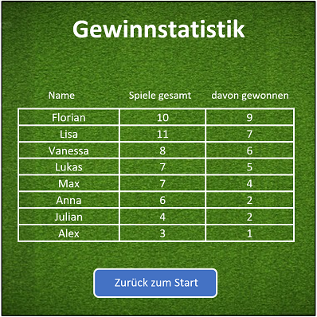

1. Projekt-Beschreibung
Programmierung eines Mühlespiels, welches von zwei Spielern an einem einzigen Computer gespielt werden kann. Die vollständige Anleitung des Mühlespiels wird im Handbuch beschrieben.
2. Features und Anforderungen
Das Spiel Mühle soll in den folgenden Wochen mit Java, Eclipse und GitHub entwickelt werden. Nach seiner Fertigstellung soll es von zwei Spielern an einem Computer in Java gespielt werden können. Das Spiel kann hierbei in drei unterschiedliche Spielphasen eingeteilt werden:
- Setzphase
- Zugphase
- Springphase
Aufgrund des Umfangs und der Komplexität wird als Grundanforderung die reibungslose Funktion bis Ende der Setzphase angestrebt. Ziel der Entwicklung bleibt es jedoch ein komplett funktionsfähiges Mühlespiel zu programmieren.
Beim Starten des Spiels sollen die Spieler zuerst in einem „Willkommen“-Fenster mit einem Mühlespielfeld im Hintergrund begrüßt werden. Die Spieler können in diesem Fenster ihre Namen eintragen und ihre Spielfarbe zuordnen. Ein Spieler bekommt die schwarzen Steine, der andere Spieler die weißen Steine. Die Zuordnung ermöglicht es, während dem Spielverlauf aktuelle Spielstände anzugeben. Schließlich kann das Spiel durch Klicken eines „Start“ Buttons gestartet werden.
Nun öffnet sich ein Fenster in der Mitte des Bildschirms, welches nicht weiter skalierbar sein soll. Auf diesem sitzen sich die beiden Spieler „gegenüber“. Im Fenster wird mittig das Mühlebrettspielfeld von oben blickend als Bild angezeigt. Links werden Angaben zum Spieler 1 gemacht, rechts zum Spieler 2. Ein Spiel kann jederzeit durch einen Button "Neues Spiel" abgebrochen und neu gestartet werden. Die Angaben beinhalten die Information über
- die Anzahl der Steine, die noch gesetzt werden können
- die Anzahl der Steine, die man insgesamt noch besitzt
- die Anzahl der Steine, die man dem anderen Spieler abgenommen hat
In der Setzphase platzieren die Spieler abwechselnd ihre Steine auf dem Mühlespielfeld. Durch Anklicken eines Feldes wird der Stein auf das Feld gesetzt, es nimmt somit den Zustand "weiß" oder "schwarz" an. Die Steine werden hierbei mit schwarzen bzw. weißen Kreisen angezeigt. Setzt ein Spieler einen Stein, kann dieser Spielzug nicht mehr rückgängig gemacht werden und automatisch ist der andere Spieler an der Reihe. Beim Anklicken eines besetzten Feldes wird im Infofeld eine Warnung ausgegeben, dass dieser Spielzug nicht erlaubt ist. Eine doppelte Besetzung eines Feldes ist nicht möglich. Sobald drei Steine einer Farbe in einer Reihe sind, wird angezeigt, dass nun ein Spielstein der anderen Farbe durch Anklicken vom Feld genommen werden kann. Dieser darf sich nicht in einer bestehenden Mühle befinden. Auch in diesem Fall wird ein entsprechender Hinweis im Infofeld angezeigt.
Sobald alle Steine gesetzt sind, kommt man in die zweite Phase des Spiels, der Zugphase. Zuerst klickt der Spieler auf den Stein, den er verschieben möchte und anschließend auf das Zielfeld. Sollte dieses besetzt sein oder sich nicht in direktem Anschluss zum ausgewählten Stein befinden, wird im Infofeld wieder eine entsprechende Warnung ausgegeben. Bei einer Mühle darf wieder ein Stein der anderen Farbe vom Spielfeld genommen werden.
Zur letzten Phase des Spiels, der Springphase, gelangen die Spieler, sobald einer von ihnen nur noch drei Spielsteine auf dem Feld hat. Auch der Beginn dieser neuen Phase wird im Infofeld angezeigt. Spieler mit nur noch drei Steinen können nun zu einem beliebigen Feld springen. Die Einschränkung nur unmittelbar anliegende Felder anspielen zu können wird damit aufgehoben.
Sobald einem Spieler nur noch 2 Steine zur Verfügung stehen, öffnet sich ein neues „Sieger“- Fenster. In diesem wird der Gewinner mit seinem Namen angezeigt und beglückwünscht. Ein zusätzliches Feature ist das Öffnen einer Gewinnstatistik. In dieser werden die Namen aller Spieler und die Anzahl ihrer gewonnenen Spiele tabellarisch aufgelistet. Voraussetzung hierfür ist die dauerhafte Speicherung der Namen mit den entsprechenden Spielausgängen. Durch einen Button "Zurück zum Start" kann ein neues Spiel begonnen werden. Ein Spiel kann jederzeit durch das Anklicken durch das „Schließen“-Fenster beendet werden. Der Zwischenstand des Spiels wird hierbei nicht gespeichert. Generell können Spielzüge nicht rückgängig gemacht werden. Die bekannten Mühle-Spielregeln sollen im gesamten Spielverlauf eingehalten werden. Sie werden im Handbuch weiter beschrieben.
3. Architektur
Beschreibung der Software-Architektur
Die Klasse Spielbrett steht in einer Verbindung zur Klasse Spieler, welche mit den Methoden setzeStein() und nehmeStein() auf das Attribut Positionsarray zugreift. Auch die Klasse Stein greift mit der Methode move() auf dieses Attribut zu. Desweiteren steht die Klasse Stein in einer Komposition mit "Spieler". Da "Spieler" mit der Methode setzeStein() die Klasse "Stein" erst initialisiert kann "Stein" ohne "Spieler" nicht existieren. Jeder Spieler im normalen Spielverlauf 2 bis 9 Steine haben, aber in der Setzphase startet man mit 0 Steinen. Hingegen kann jeder Stein nur einem Spieler zugehörig sein. Für "Spielbrett" gilt, dass es 2 Spieler haben muss, und jeder Spieler nur ein Spielfeld haben kann.
Das Klassendiagramm kann mit Hilfe von Pseudo Code (siehe HTML Quelltext) erstellt werden (Hilfe).4. Aufwandsschätzung und Aufteilung
TODO: Schätzen Sie den Aufwand der verschiedenen Teile Ihres Programms ab und legen Sie fest, wie die Aufteilung auf die Gruppenmitglieder aussehen soll.
- Die meiste Zeit sollte für die Erfüllung der Grundanforderungen aufgebracht werden. D.h. im ersten Moment für die "Setzphase". Dies spiegelt sich auch in den Klassen wieder. Gerade bei den Klassen "Spielbrett" und "Spieler" bedarf es hierzu wahrscheinlich den größten Zeitaufwand. Weniger Aufwand bedarf es wahrscheinlich bei der Klasse "Stein". Zu beachten ist, dass genügend Zeit für Testphasen eingeplant werden. Nach erster Einschätzung sollten die Grundanforderungen spätestens zu Woche 8 abgeschlossen sein. Zusätzliche Anforderungen können dann im Anschluss noch hinzugefügt werden. Dies mit eingerechnet, plus eine finale Testphase und die Erstellung des Nutzerhandbuchs sollten zu Woche 11/12 abgeschlossen sein, sodass noch ein bis zwei Wochen "Puffer" vorhanden sind. Die genaue Einteilung welche Gruppenmitglieder welche Aufgaben übernehmen folgt noch.